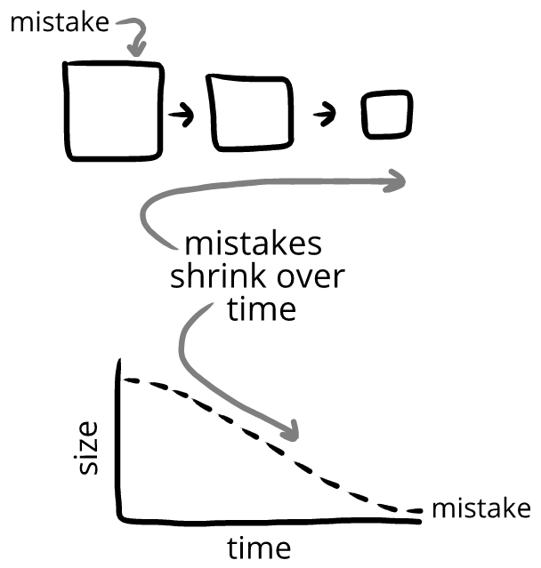

All mistakes shrink over time:
That's because when something
Heather gets a haircut. All week, she feels strange whenever she looks into the mirror or washes her hair. (←mistake lasts for a week)
Eventually, she starts to look normal to herself when she looks in the mirror. (←Heather readjust to mistake)
A month later, Heather looks at an old post of her with her old hairstyle. She looked so different back then! (←Heather’s old mistake has become her expectations, and her old expectations have become a mistake)
While our expectations always adjust, sometimes our expectations readjust
Minh and Trevor check their co-op score. 469.
Trevor: “69. Nice.”
Minh: "Heh" (←Minh's expectations quickly adjust) - OR -
Minh and his mom check their co-op score. 469.
Mom: "69. Nice."
Minh: (surprised) "Mom!" *laughs* (←Minh's expectations slowly adjust)
Zoe wears an accessory she's never worn before. It's a bit unusual at first, but she gets used to it quickly. (←Zoe's expectations quickly readjust) - OR -
Owen wears an accessory he's never worn before. He's never worn anything like that before, and he feels self-conscious about it the entire day. (←Owen's expectations slowly readjust)
The university's administrative building had a new coat of paint applied over the weekend. Zoe and Emma notice the refreshed colors for a while, but after a week it just seems like how the building has always been. (←Zoe and Emma's expectations quickly readjust) - OR -
The university's administrative building was torn down over the weekend. Zoe and Emma marvel at how different the street looks now. The building is just… gone. The site seems weird for weeks. (←Zoe and Emma expectations slowly readjusts)
The more